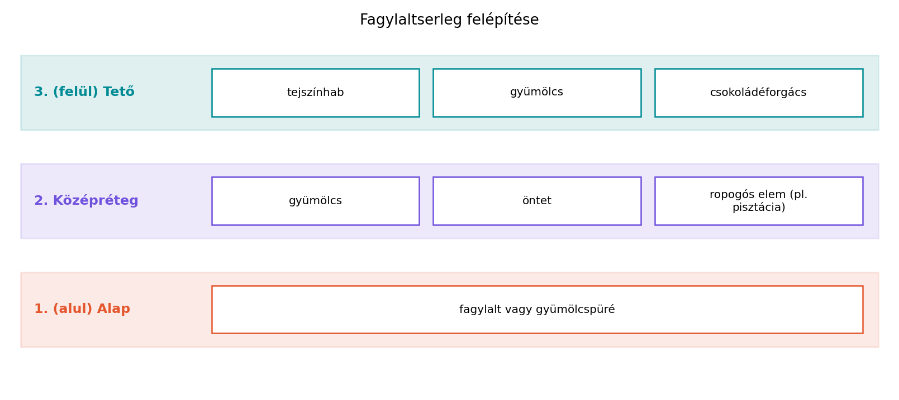

Nyári melegben a vendég könnyű, gyümölcsös vagy krémes desszertet kér. A hideg édességek nagy előnye, hogy előre elkészíthetők, hűtőben várnak, és tálaláskor frissítően hatnak. A szakácsnak viszont pontosan kell ismernie a zselésítőanyagok és a krémes alapok viselkedését, mert egy folyós zselé, kicsapódott krém vagy jeges parfé nemcsak hibás, hanem élelmiszer-biztonsági kockázatot is jelezhet.
Képzelj el egy desszertes tányért: alul sötét erdei gyümölcs püré, rajta fényes, remegő ribizlizselé, mellette egy kanál bajor krém és egy vékony szelet fagyasztott parfé. Mindegyik hideg, de más az állaga: folyó, remegő, krémes, fagyos. A cél, hogy ezeket az állagokat ellenőrzötten, azonos minőségben hozzuk létre.
Definíció. A hideg édességek csoportjába azok az étkezést lezáró fogások tartoznak, amelyek hűtve vagy fagyasztva kerülnek a vendég elé, és jellemzően zselésítő, habosító vagy fagyasztó eljárással készülnek. Ide soroljuk a hideg gyümölcskészítményeket, a krémeket, a zseléket, a parfékat, a fagylaltokat, a sorbet-okat és a fagylaltserlegeket.
Szabály. A hideg édességeknél a hőkezelést követően azonnali, gyors visszahűtés szükséges. A kb. 5–60 °C közötti veszélyes hőmérsékleti zónában a mikroorganizmusok gyorsan szaporodnak, ezért az ételt mihamarabb 5 °C alá kell hűteni: tanulási érték 2 órán belül 20 °C alá, további 4 órán belül 5 °C alá (ellenőrizendő: HACCP-terv, NÉBIH-útmutató). A nyers tojás felhasználása helyett pasztőrözött tojáskészítményt vagy hőkezelt krémet készítsünk.
Allergén. A hideg desszertekben gyakori allergének: tej, tojás, diófélék, glutén, szója, kén-dioxid (aszalt gyümölcsben). Minden technológiai lapon fel kell tüntetni a 14 fő allergént, és a vendéget pontos tájékoztatással kell ellátni.
Jogszabály. Az élelmiszer-higiéniáról szóló 852/2004/EK rendelet előírja a hűtési lánc fenntartását. Az 1169/2011/EU rendelet a fogyasztói tájékoztatást (allergének, adatok) szabályozza, a nem előrecsomagolt desszertekre is (ellenőrizendő: hatályos szöveg és magyar végrehajtás).
A zselésítőanyagokat már megismertük az Ízesítők, adalékanyagok, állományjavítók és kényelmi anyagok alfejezetben. Itt a hideg desszertekben való pontos használatuk a fontos.
Továbbvitt eredmény. A zselésítőanyagok arányát és oldási szabályait az A tányérdesszert alkotóelemei: öntetek, mártások, sabayon, redukciók, habok alfejezet használja fel, ahol zselék és mártások készülnek desszerttányérokhoz.
Az alábbi rétegábra a fagylaltserleg javasolt felépítését mutatja be úgy, ahogy a pohárban látod: a serleg alja lent van, és alulról felfelé (1 → 3) rakod a rétegeket:

Adagszám: 10 adag Adagsúly: kb. 120 g krém + 30 g öntet
Anyaghányad-táblázat (10 adagra):
| Nyersanyag | Mennyiség 10 adagra | Megjegyzés |
|---|---|---|
| Tej (3,5% zsír) | 500 ml | allergén: tej |
| Tojássárgája | 8 db (kb. 145 g, kb. 18 g/db; ellenőrizendő) | allergén: tojás; pasztőrözött tojáslé is használható |
| Cukor | 150 g | a krémhez |
| Vaníliarúd | 1 db | kikapart magokkal |
| Lapzselatin | 6 lap (kb. 12–15 g) | ellenőrizendő: gyártói adagolás |
| Tejszín (30% zsír) | 400 ml | allergén: tej; hidegen, habbá verve |
| Erdei gyümölcs (fagyasztott) | 300 g | pl. málna, ribizli, áfonya |
| Cukor (öntethez) | 50 g | |
| Citromlé | 20 ml (2 cl) |
Allergének: glutén (csak ha kekszet adunk hozzá), tojás, tej. Diófélék nem szerepelnek, de a tálalókanál, díszítőelem keresztszennyezést okozhat; külön eszközzel dolgozzunk.
Eszközök és gépek: főzőedény, habverő, kézi habverő vagy gép, szűrő, hideg vizes tál, lábos a duzzasztáshoz, pudingforma vagy üvegtálak, hűtő.
Előkészítés: 1. A lapzselatint hideg vízbe áztatjuk legalább 10 percre. 2. A vaníliarudat hosszában bevágjuk, magjait kikaparjuk. 3. A gyümölcsöt szobahőmérsékletűre engedjük, ha fagyasztott. 4. A tejszínt hidegen tartjuk; közvetlenül felhasználás előtt habbá verjük.
Elkészítés: 1. A tejet a vaníliával felforrósítjuk, de nem forraljuk. 2. A tojássárgáját a cukorral fehéredésig keverjük. 3. A forró tejet fokozatosan, állandó keverés mellett a tojáskrémhez adjuk (temperálás), majd visszaöntjük a lábosba. 4. Vízfürdőn vagy kis lángon, folyamatos keveréssel 82–84 °C-ra melegítjük, amíg a krém bevonja a fakanalat. Kritikus pont: ne lépje túl a 85 °C-ot, mert a tojás kicsapódik. 5. A tűzről levéve belekeverjük a kinyomkodott, megduzzasztott zselatint, amíg teljesen fel nem oldódik. A krém hőmérséklete 60–70 °C legyen; ne forraljuk tovább. 6. A krémet hideg vizes tálban, kevergetve 25–30 °C-ra hűtjük (gyors visszahűtés). 7. Amikor már nem forró, de még folyékony, óvatosan, két részletben beleforgatjuk a lágy tejszínhabot. 8. A krémet formákba vagy poharakba töltjük, és legalább 4 órára hűtőbe tesszük (0–5 °C, ellenőrizendő: HACCP-terv). 9. Az öntethez a gyümölcsöt cukorral és citromlével puhára főzzük, botmixerrel pürésítjük, szükség esetén leszűrjük, majd hűtjük.
Kritikus pontok: - Tojáskrém hőkezelése: 82–84 °C mag (a tojássárgája hőkezeltnek minősül, ha eléri ezt a hőmérsékletet, ellenőrizendő: azonnali fogyasztásra szánt krémnél). - Gyors visszahűtés: a krémet 2 órán belül 20 °C alá, további 4 órán belül 5 °C alá kell hűteni (tanulási érték, ellenőrizendő: HACCP-terv, NÉBIH-útmutató). - Hűtőtárolás: 0–5 °C, a krémet lefedve, a gyümölcsöntetet külön tároljuk. - Keresztszennyeződés: a nyers tojás és a kész krém ne érintkezzen; a habverőt, edényt a tojáskrém elkészítése után el kell mosni, mielőtt a tejszínhabbal dolgozunk.
Készentartás és tálalás: A krém hűtőben 1–2 napig biztonságos (tanulási érték, ellenőrizendő: HACCP-terv), de a legjobb frissen. Tálaláskor a formát pár másodpercre forró vízbe mártjuk, tányérra borítjuk, köré kanalazzuk az öntetet, friss gyümölccsel díszítjük.
A zselatin útját és a kiborítást a képsor követi: az 1–2. kép az előkészítés 1. lépése, a 3–5. kép az elkészítés 5–8. lépése, a 6. kép a tálalás.
A két hibás kép a leggyakoribb tanulói hibákat mutatja. Ha a zselatin túl hideg vagy már sűrűsödő krémbe kerül, szálas, csomós lesz: mindig a meleg krémben oldd fel. Ha a formát túl röviden mártod forró vízbe, a krém beszakad, ha túl sokáig, a felülete megolvad. A HTML-kiadásban a lépések egyenként lejátszhatók.
Minőségi követelmények: A krém sima, bársonyos, légies, szeletelhető; az öntet fényes, élénk színű, selymes; az íz édes-savanykás, harmonikus.
Tipikus hibák és javításuk: lásd a Tipikus hibák és okaik szakaszt.
Változatok: panna cotta, joghurt bajor krém, alkoholos változat (kevés likőr hozzáadásával).
Számítási példa 1: Zselatin adagolás átváltása
Adott: 1 liter bajor krém alaphoz 12 g lapzselatin szükséges. Egy lap tömege 2,5 g. Hány lap kell 800 ml krémhez?
Keresett: lapok száma.
Képlet: .
Lapok száma: .
Kerekítés: 4 lap (a biztonság kedvéért felfelé kerekítünk, mert a zselatin ereje változhat; pontos mérés mellett 9,6 g-ot mérünk le).
Számítási példa 2: Receptúra-átszámítás 15 adagra
A 10 adagos táblázatból a tejszín 400 ml. A szorzószám: .
Tejszín: . Tojássárgája: . Cukor (krémhez): . Lapzselatin: .
Ellenőrzés: az adagszám nőtt 1,5-szeresére, a tömeg és a lapok arányosan nőnek; a mértékegységek konzisztensek.
Munkalap: Gyümölcszselé készítése (10 adag)
Cél: A tanuló önállóan elkészít egy narancszselét zselatinnal, betartva a higiéniai és hőmérsékleti szabályokat.
Eszközök és anyagok: főzőedény, szűrő, zselatin (12 g por vagy kb. 5–6 lap, a lap tömege szerint; savas lé miatt a felső értékkel, ellenőrizendő: gyártói adagolás), narancslé (1 l, 100%-os), cukor (80 g), citromlé (20 ml), formák vagy poharak, hűtő, hideg vizes tál, mérőedények, digitális mérleg.
Biztonsági korlát. Forró folyadékot mozgatunk; a zselatinos keveréket ne forraljuk. A formákat óvatosan, csúszásmentes felületen töltsük.
Higiéniai előkészület: alapos kézmosás, tiszta eszközök, hajszálvédő, a munkafelület fertőtlenítése.
Lépések: 1. Mérj ki 1 l narancslevet, és öntsd főzőedénybe. 2. A zselatint hideg vízbe áztasd (12 g por vagy kb. 5–6 lap, a gyártói adagolás szerint) 10 percre. 3. A narancslevet a cukorral melegítsd 60–70 °C-ra; ne forrald. 4. Keverd bele a kinyomkodott zselatint, amíg teljesen feloldódik, majd a citromlét (20 ml) a feloldás után, a langyosra hűlt lébe keverd. 5. Hűtsd le a keveréket hideg vizes tálban, kevergetve, amíg 20 °C alá nem kerül (2 órán belül), majd a hűtőben 5 °C alá hűl további 4 órán belül (tanulási érték, ellenőrizendő: saját HACCP). 6. Öntsd formákba vagy poharakba, helyezd hűtőbe 2–3 órára (0–5 °C). 7. Tálalás előtt ellenőrizd: a zselé remegős, szeletelhető, nem folyós.
Ellenőrzési pontok: hőmérséklet (60–70 °C oldás, visszahűtés 2 órán belül 20 °C alá, majd 4 órán belül 5 °C alá), zselatin teljes oldódása, hűtési idő, állag.
Dokumentálás: HACCP-lap: dátum, étel neve, zselatin típusa és lot-száma, hűtés kezdő és záró ideje, hűtő hőmérséklet, ellenőrző aláírása.
Egy rendezvényen a gyümölcszselé folyós maradt. A szakács a zselatint forrásba kerülő lébe tette, így a zselatin elvesztette kötő erejét. A desszertet újra kellett készíteni, a vendégek vártak. A tanulság: a zselatint soha ne forraljuk, és mindig mérjük meg a hőmérsékletet (60–70 °C) a feloldás előtt.
1. feladat (A)
Csoportosítsd a következő fogalmakat: gyümölcssaláta, panna cotta,
borzselé, parfé, sorbet. Írd mindegyik mellé, hogy gyümölcskészítmény,
krém, zselé vagy fagyasztott édesség!
2. feladat (A)
Számítsd ki: 1 liter zseléhez 15 g zselatin kell. Hány gramm zselatin
kell 750 ml folyadékhoz?
3. feladat (B)
Állítsd sorrendbe a bajor krém készítésének lépéseit: a) Zselatin
belekeverése a meleg krémbe b) Tejszín felverése c) Tojáskrém hőkezelése
82–84 °C-ra d) Gyors visszahűtés, amíg a krém már nem forró, de még
folyékony e) Tej felforrósítása vaníliával f) A tejszínhab
beleforgatása
4. feladat (B)
A 10 adagos bajor krém receptúra szerint 400 ml tejszín kell. Hány
adagot tudsz készíteni 1 liter tejszínből, ha minden más anyag arányosan
rendelkezésre áll? (Válaszolj egész adagra kerekítve.)
5. feladat (C)
Egy vendég laktózérzékeny. Javasolj átalakítást a panna cottához, hogy
laktózmentes legyen, és nevezd meg, milyen allergéneket kell még
figyelni!
6. feladat (D)
A gyakorlati útmutató alapján hiba történt: a narancszselé folyós
maradt. Sorolj fel legalább három lehetséges okot, és mindegyikre adj
helyesbítő javaslatot!
Önellenőrzés – válaszok
Feladatok – válaszok
1. feladat (A)
Gyümölcssaláta: gyümölcskészítmény; panna cotta: krém; borzselé: zselé;
parfé: fagyasztott édesség; sorbet: fagyasztott édesség
(gyümölcsjég).
2. feladat (A)
Képlet:
.
Tehát 11,25 g zselatin kell.
3. feladat (B)
Helyes sorrend: e) Tej felforrósítása vaníliával, c) tojáskrém
hőkezelése 82–84 °C-ra, a) zselatin belekeverése a meleg krémbe, d)
gyors visszahűtés, b) tejszín felverése (közvetlenül felhasználás előtt,
a krém hűtése közben), f) a tejszínhab beleforgatása. Sorrend: e → c → a
→ d → b → f.
4. feladat (B)
10 adaghoz 400 ml tejszín kell. 1 liter = 1000 ml. Szorzószám:
.
Adagok:
adag. Tehát 25 adag készíthető.
5. feladat (C)
A hagyományos panna cotta tejszínből készül, ami laktózt tartalmaz.
Laktózmentes változathoz használjunk laktózmentes tejszínt vagy növényi
alternatívát (pl. kókusztejszín – ez egyúttal tejmentes is, de a vendég
tájékoztatása szükséges). Figyelni kell: ha a tetejére kekszmorzsát
szórunk, az glutént; ha tojásos karamellt adunk, az tojás; ha dióval
díszítjük, az diófélék. Az elkülönített eszközök és a tiszta tároló
edények kulcsfontosságúak.
6. feladat (D)
Lehetséges okok: 1. Túl kevés zselatin – mérjünk pontosan, használjunk
gyártói adagolást. 2. A zselatint forró lébe kevertük, így elvesztette
kötő erejét – a zselatint 60–70 °C-on oldjuk. 3. A keveréket túl rövid
ideig hűtöttük, még nem dermedt meg – hagyjuk a hűtőben 2–3 órát,
ellenőrizzük az állagot. 4. Savas narancsléhez nem növeltük a
zselatinadagot – savas közegben több zselatin kell (ellenőrizendő:
gyártói adat).
A hideg édességek csoportjába tartoznak a gyümölcskészítmények (gyümölcssaláta, kompót, pürék), a krémek (vaníliakrém, bajor krém, panna cotta), a zselék (gyümölcs-, bor-, joghurtzselé), a parfék, a fagylaltok, a sorbet-ok és a fagylaltserlegek. A zselésítőanyagok közül a zselatin a leggyakoribb; hideg vízben duzzasztjuk, 60–70 °C-on oldjuk, forralni tilos. Általános arány: 10–15 g lapzselatin 1 liter folyadékhoz (ellenőrizendő). A tojáskrémet 82–84 °C-ra melegítjük, nem forraljuk. A hőkezelt készítményeket gyorsan, a főzés végétől 2 órán belül 20 °C alá, további 4 órán belül 5 °C alá kell hűteni, majd 0–5 °C-on tárolni. Allergének: tej, tojás, diófélék, glutén, szója; a vendéget mindig tájékoztatni kell. A technológiai lap és a gyakorlati útmutató betartása biztosítja a minőséget és az élelmiszer-biztonságot. Továbbvitt eredmény. A zselésítőanyagok aránya (10–15 g zselatin 1 liter folyadékhoz) és oldási szabályai átkerülnek az A tányérdesszert alkotóelemei: öntetek, mártások, sabayon, redukciók, habok alfejezetbe.